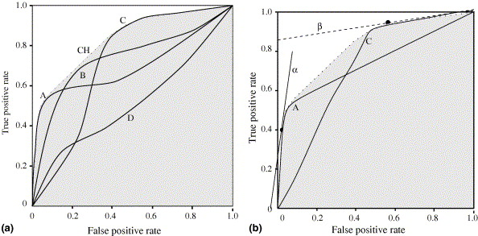
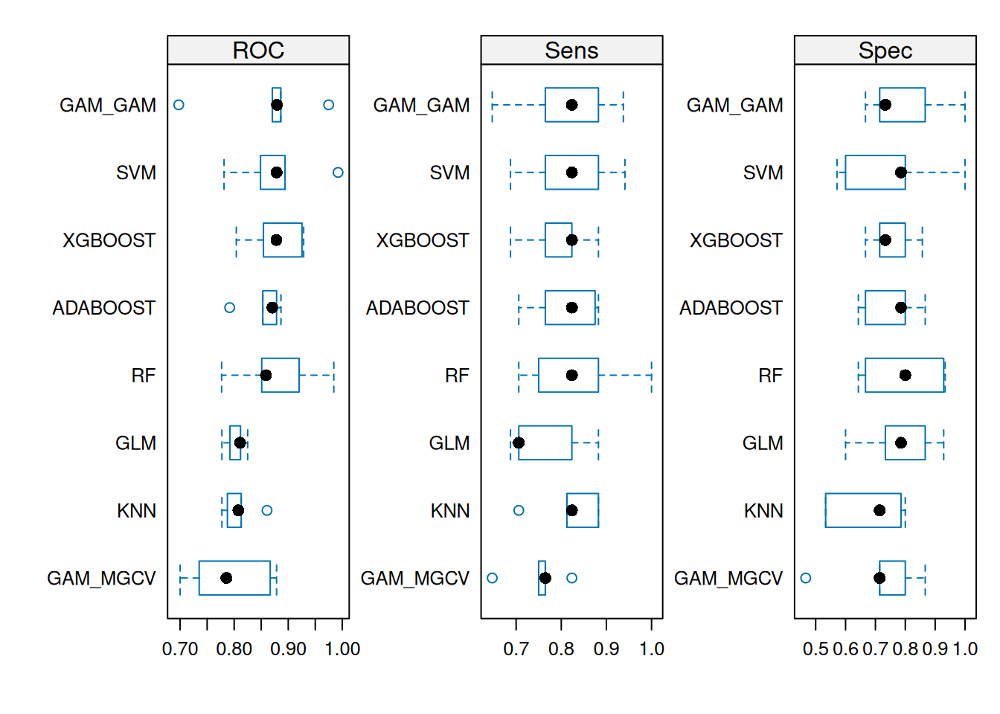

library(dplyr)
library(tidyr)
library(ggplot2)
library(caret)
library(doParallel)
library(mlbench)
cl <- makePSOCKcluster(5) # 5 cores para proc. paralelo
registerDoParallel(cl)4 Selección y validación de modelos
4.1 Consideraciones generales
Hace varias décadas, la evaluación y selección de modelos se efectuaba mediante pruebas estadísticas que medían la bondad de los ajustes y a través de la evaluación de los residuos (errores) del modelo propuesto. Hoy en días, la evaluación se realiza empleando medios mucho más robustos, las conocidas como funciones de pérdida (loss functions).
Una función de pérdida es una métrica que compara los valores predichos respecto de los valores que realmente se han producido. Su salida se denomina habitualmente error o bien pseudo-residuo. En este contexto, tenemos que tener en cuenta una premisa fundamental:
\[ \text{DATOS} = \text{MODELO} + \text{ERROR}. \]
- Los datos describen la realidad que queremos explicar mediante el modelo, a través de una serie de variables que describen dicho problema.
- El modelo es una representación simplificada de la realidad, propuesta para intentar describirla de manera más fácilmente comprensible. Cuanto más sencillo sea el modelo más fácil será interpretarlo, pero también puede que cometa más imprecisiones al describir el fenómeno real que estudiamos.
- El error representa el fallo que cometemos al simplificar la realidad mediante el modelo simplificado.
Existen muchos tipos de funciones de pérdida para evaluar el rendimiento de modelos predictivos, cada una con sus ventajas e inconvenientes. Es importante recordar que cada función de pérdida se calcula teniendo en cuenta uno o varios tipos de error cometidos por el modelo, dejando otros de lado, por lo que es complicado afirmar mirando una sola de estas funciones que podemos escoger un modelo óptimo. Dependiendo del problema en cuestión, debemos seleccionar primero la función o funciones de pérdida más adecuadas para evaluar las características del modelo que nos interesan. Después, podemos aplicarlas para evaluar los candidatos y seleccionar una opción.
4.2 Métricas de rendimiento
4.2.1 Modelos de regresión
- Error Cuadrático Medio (Mean Squared Error o MSE): el objetivo es minimizar el promedio de la combinación de los errores cuadráticos cometidos en la predicción de cada punto.
\[ \text{MSE} = \frac{1}{n}\sum_{i=1}^n (y_i - \hat{y}_i)^2 \tag{4.1}\]
Hay que tener en cuenta que en modelos de regresión lineal, el divisor de la ecuación Ecuación 4.1 es \(n-p\) para proporcionar una mejor estimación (reduciendo el sesgo).
Raíz del Error Cuadrático Medio (Root Mean Squared Error o RMSE): es la raíz cuadrada del MSE. Su fin es dar una estimación del error cometido en las mismas unidades que la variable de salida que buscamos predecir. El objetivo aquí también es minimizar la función de pérdida.
Desviación: desviación promedio de los residuos, cuando el modelo se estima mediante un método de máxima verosimilitud. Se suele emplear en modelos de clasificación y el objetivo es minimizar su valor.
Error Medio Absoluto (Mean Absolute Error o MAE): en este caso, en lugar de tomar la raíz cuadrada del MSE se calculan las diferencias entre los valores reales y predichos tomando su valor absoluto, lo que contiene la influencia de los errores con valores altos. EL objetivo es minimizar la función de pérdida.
Error Medio Cuadrático Logarítmico (*Root Mean Squared Logarithmic Error** o RMSLE): Es la raíz cuadrada del error medio cuadrático logarítmico. Permite que los errores grandes cometidos sobre valores de salida de magnitud pequeña contribuyan de igual forma a la función de pérdida que los errores grandes cometidos sobre valores de salida de magnitud grande, ya que de otro modo los segundos prevalecerían sobre los primeros. Aquí el objetivo es minimizar igualmente la función de pérdida.
\[ \text{RMSLE} = \sqrt{\frac{1}{n} \sum_{i=1}^n (log(y_i +1) - log(\hat{y}_i + 1))^2}. \tag{4.2}\]
- \(R^2\) y \(R_{adj}^2\): son métricas que representan el porcentaje de la varianza total de los datos que el modelo es capaz de explicar. La versión ajustada intenta tener en cuenta el número de variables predictoras empleadas, penalizando modelos más complejos. De otro modo, usar un mayor número de variables normalmente aumentaría sin más el valor de \(R^2\). El objetivo aquí es maximizar su valor. No obstante, es preciso obrar con precaución puesto que, como se indica en (Boehmke & Greenwell, 2019) (Sec. 2.6.2), dos modelos entrenados con datos diferentes que tengan el mismo RMSE, pero en los que el primero tenga menos variabilidad (dispersión) en los valores de la salida del modelo que el segundo tendrá también un \(R^2\) menor.
4.2.2 Modelos de clasificación
Las métricas de rendimiento de los modelos de clasificación se suelen construir a partir de los valores de la llamada matriz de confusión, que refleja el tipo de aciertos y errores cometidos por el modelo al clasificar, como muesgtra la Figura 4.1.

- Accuracy: se define como (objetivo: maximizar)
\[ \text{ACC} = \frac{\text{TP}+\text{TN}}{\text{total}}. \tag{4.3}\]
- Precision: se define como (objetivo: maximizar)
\[ \text{PREC} = \frac{\text{TP}}{\text{TP}+\text{FP}}. \tag{4.4}\]
- Recall (sensitivity): se define como (objetivo: maximizar)
\[ \text{RECALL}= \frac{\text{TP}}{\text{TP}+\text{FN}}. \tag{4.5}\]
- Specificity: se define como (objetivo: maximizar)
\[ \text{SPEC}=\frac{\text{TN}}{\text{TN}+\text{FP}}. \tag{4.6}\]
- F1-score: se trata de la media armónica entre precisión y recall, dado por
\[ \text{F1} = 2\;\frac{\text{PREC}\times\text{RECALL}}{\text{PREC} + \text{RECALL}} \tag{4.7}\]
- F-score generalizado: como el anterior, pero añadiendo pesos de ponderación, dado por
\[ \text{F1} = (1+\beta^2)\;\frac{\text{PREC}\times\text{RECALL}}{\beta^2\text{PREC} + \text{RECALL}} \tag{4.8}\]
Si \(\beta=1\) tenemos el F1-score. Si \(\beta=2\) otorgamos el doble de peso a la recuperación frente a la precisión y al contrario si \(\beta=0.5\).
- AUC (Área Bajo la Curva ROC): dependiendo de los valores otorgados a los hiperparámetros del modelo, podremos mejorar la precisión, la sensitividad o ambas, minimizando los falsos positivos y falsos negativos. Las curvas ROC (Receiver Operating Characteristic) se crearon para represntar gráficamente estos valores en función de cada combinación de los hiperparámetros del modelo, permitiendo una evaluación gráfica más general de su rendimiento. En este caso el Area Under the [ROC] Curve (concretamente, entre la curva ROC y la línea recta diagonal que representa a un clasificador aleatorio) debe ser lo más grande posible. Estos conceptos se muestran en la

Además de estas métricas, habituales en modelos de clasificación, podemos considerar otras posibles funciones de pérdida.
Error de clasificación: Es el error promedio total, que buscamos minimizar. Por ejemplo, asumamos tenemos que clasificar la salida en dos posibles grupos y cada uno consta de 40 observaciones. Si fallamos al clasificar 6 elementos del primer grupo y 3 del segundo, en total hemos fallado en 9 de las 40 observaciones, lo que implica un ratio de clasificación incorrecta del 11,25%.
Error promedio por clase: Este es el error promedio cometido dentro de cada clase. Por ejemplo, en el problema anterior sería \(6/40\) en el primer grupo y \(3/40\) en el segundo grupo. El propósito es minimizar este error.
Entropía cruzada (cross-entropy o Log Loss o deviance): esta métrica penaliza en gran medida los casos en los que se asigna una alta probabilidad a una salida incorrecta (es decir, el modelo se dice muy seguro de la respuesta, pero ha fallado). El objetivo también es minimizar su valor.
Índice de Gini: empleado en modelos basados en árboles de decisión, es una medida de pureza (purity), donde valores pequeños indican que un nodo contiene, de forma predominante, observaciones de una sola clase. Por tanto, permite medir lo bien que es capaz de separar las clases entre sí el árbol en cada nodo. El objetivo es minimizar su valor.
4.2.3 Ajuste de parámetros
Como se ha explicado en la Sección 2.4, cuando escogemos una o varias métricas de evaluación de rendimiento, el procedimiento que solemos seguir es aplicar un método de validación (cruzada con \(k\) conjuntos, bootstrapping) para obtener un resultado de evaluación en cada iteración. Finalmente, se combinan estos resultados para obtener una evaluación final de cada modelo, así como unos valores adecuados con los que fijar los hiperparámetros necesarios del modelo.
En el caso de los modelos de regresión (salida numérica), este proceso es bastante directo, comparando los resultados de la métrica o métricas seleccionadas. Sin embargo, en el caso de modelos de clasificación la evaluación es más complicada, porque como hemos visto hay que tener en cuenta el rendimiento del modelo para cada uno de los posibles grupos o clases presentes en la variable de salida. Por ese motivo, y debido al hecho de que diferentes combinaciones de los hiperparámetros del modelo ofrecen resultados distintos para la sensibilidad y la especificidad, se prefiere optar por comparar modelos mediante las curvas ROC.
En ciertas ocasiones, valdrá la pena, si tenemos tiempo y suficientes recursos computacionales a nuestra disposición, realizar una búsqueda sistemática de los posibles valores de los hiperparámetros de nuestro modelo para garantizar nuestra selección. Esta búsqueda sistemática o grid search implica definir un rango de posibles valores entre los cuales realizaremos un “barrido”, comparando los resultados obtenidos para intentar conseguir un resultado adecuado.
4.3 Comparación de modelos
4.3.1 Curvas ROC
La Figura 4.3 representa gráficamente el llamado ROC convex hull (ROCCH) Fawcett & Provost (2001), que colorea en gris un área cuyo perímetro exterior corresponde a puntos que tienen el mismo rendimiento de clasificaión, desde el punto de vista de la curva ROC.

Por ejemplo, en la Figura 4.3 a) (izq.) podemos ver que las curvas B y D están dentro de la región del convex hull y, por tanto, son subóptimas para cualquier condición. Por contra, el área principal del convex hull queda delimitada por partes de las curvas A y C. Por lo tanto, si buscamos un clasificador óptimo podríamos eliminar B y D del proceso de selección, directamente. También podemos descartar la utilización de cualquier configuración de los modelos A y C cuyo rendimiento no se encuentre sobre el perímetro del convex hull.
Matemáticamente, dos puntos en el espacio ROC, \((FP_1, TP_1)\) y \((FP_2, TP_2)\) tienen un rendimiento equivalente desde el punto de vista de la curva ROC si:
\[ \frac{TP_2 - TP_1}{FP_2 - FP_1} = m\,. \]
En la Figura 4.3 b) (dcha.), se representan dos líneas explícitasa con rendimiento uniforme, \(\alpha\) y \(\beta\).
Consideremos un típico problema de clasificación binaria, con dos posibles clases de salida \(\{-1, 1\}\). En un primer escenario de clasificaión, en el que la clase negativa sobrepasa en número 10:1 a la clase positiva, pero los falsos negativos (FN) y los falsos positivos (FP) tienen el mismo coste, el resultado sería \(m = 10\). La línea con pendiente \(m = 10\) mas al noroeste (esquina superior izq., mejor rendimiento) del la gráfica ROC es \(\alpha\), tangente al clasificador A. Ese sería el clasificador selecciónado.
Si ahora tenemos otro escenario de clasificación, en el que la clase negativa y la positiva están balanceadas en número de observaciones, pero un FN es 10 veces más costoso que un FP, entonces el resultado de la ecuación anterior sería \(m=1/10\). La curva más al noroeste de la gráfica ROC con esa pendiente es \(\beta\), tangente al clasificador C. Por tanto, ese sería el clasificador más adecuado para este escenario (Fawcett, 2006). En consecuencia, no es inmediato determinar qué clasificador es mejor o peor en términos absolutos, puesto que es imprescindible tener en cuenta las condiciones de contorno del problema (balance de observaciones entre clases, coste de cada error de clasificación, etc.).
Una forma muy habitual de reducir la información de la curva ROC es calcular el AUC, que hemos definido más arriba. Esta métrica tiene una propiedad interesante: el AUC de un clasificador es equivalente a la probabilidad de que el clasificador asigne un ranking mayor a una instancia positiva elegida al azar que a una instancia negativa elegida también al azar. Por otro lado, el AUC también está relacionado con el coeficiente de Gini (Hand, 2001): \(\text{Gini} + 1 = 2 \times \text{AUC}\).
4.3.2 Comparación de modelos con R
Veamos ahora cómo comparar los modelos que hemos ajustado en los ejemplos del Capítulo 3, usando el paquete caret.
load("data/sonar-models.RData")
# Compare model performances using resample()
models_compare <- resamples(list(GLM=model_glm, ADABOOST=model_adaboost, KNN=model_knn,
XGBOOST=model_xgbLinear, RF=model_rf, GAM_MGCV=model_gam_mgcv,
GAM_GAM=model_gam, SVM=model_svmRadial))
# Summary of the models performances
summary(models_compare)
Call:
summary.resamples(object = models_compare)
Models: GLM, ADABOOST, KNN, XGBOOST, RF, GAM_MGCV, GAM_GAM, SVM
Number of resamples: 5
ROC
Min. 1st Qu. Median Mean 3rd Qu. Max. NA's
GLM 0.7773109 0.7921569 0.8109244 0.8034314 0.8117647 0.8250000 0
ADABOOST 0.7916667 0.8529412 0.8705882 0.8560364 0.8784314 0.8865546 0
KNN 0.7773109 0.7875000 0.8078431 0.8092927 0.8130252 0.8607843 0
XGBOOST 0.8039216 0.8541667 0.8781513 0.8780602 0.9254902 0.9285714 0
RF 0.7767857 0.8509804 0.8588235 0.8782143 0.9201681 0.9843137 0
GAM_MGCV 0.7000000 0.7352941 0.7836134 0.7928011 0.8666667 0.8784314 0
GAM_GAM 0.6974790 0.8705882 0.8791667 0.8616597 0.8862745 0.9747899 0
SVM 0.7812500 0.8487395 0.8784314 0.8789391 0.8941176 0.9921569 0
Sens
Min. 1st Qu. Median Mean 3rd Qu. Max. NA's
GLM 0.6875000 0.7058824 0.7058824 0.7610294 0.8235294 0.8823529 0
ADABOOST 0.7058824 0.7647059 0.8235294 0.8102941 0.8750000 0.8823529 0
KNN 0.7058824 0.8125000 0.8235294 0.8213235 0.8823529 0.8823529 0
XGBOOST 0.6875000 0.7647059 0.8235294 0.7963235 0.8235294 0.8823529 0
RF 0.7058824 0.7500000 0.8235294 0.8323529 0.8823529 1.0000000 0
GAM_MGCV 0.6470588 0.7500000 0.7647059 0.7500000 0.7647059 0.8235294 0
GAM_GAM 0.6470588 0.7647059 0.8235294 0.8110294 0.8823529 0.9375000 0
SVM 0.6875000 0.7647059 0.8235294 0.8198529 0.8823529 0.9411765 0
Spec
Min. 1st Qu. Median Mean 3rd Qu. Max. NA's
GLM 0.6000000 0.7333333 0.7857143 0.7828571 0.8666667 0.9285714 0
ADABOOST 0.6428571 0.6666667 0.7857143 0.7523810 0.8000000 0.8666667 0
KNN 0.5333333 0.5333333 0.7142857 0.6733333 0.7857143 0.8000000 0
XGBOOST 0.6666667 0.7142857 0.7333333 0.7542857 0.8000000 0.8571429 0
RF 0.6428571 0.6666667 0.8000000 0.7942857 0.9285714 0.9333333 0
GAM_MGCV 0.4666667 0.7142857 0.7857143 0.7266667 0.8000000 0.8666667 0
GAM_GAM 0.6666667 0.7142857 0.7333333 0.7961905 0.8666667 1.0000000 0
SVM 0.5714286 0.6000000 0.7857143 0.7514286 0.8000000 1.0000000 0# Draw box plots to compare models
scales <- list(x=list(relation="free"), y=list(relation="free"))
bwplot(models_compare, scales=scales)

mlbench::Sonar. Fuente: [kuhn2013applied].
Análogamente, el paquete caret también incluye funciones que permiten analizar estadísticamente las diferencias entre los modelos, tal y como se explica en la Sec. 5.8.2 del manual de paquete.
stopCluster(cl)